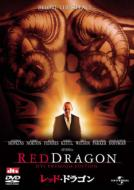
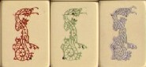

この前、テレビで「レッド ドラゴン」という洋画をやってた。

衝撃の映画、「羊たちの沈黙」の関連映画というので見た。レッド ドラゴンという伝説の怪獣のパワーを持つと信じる精神異常者が、幸せな家族をみな殺し。その犯人を主人公の刑事が追いつめるというストーリー。
捜査の過程で、刑事が犯行現場の家を検証するシーンがあった。どうやら犯人は犯行前、何日も家の様子をうかがっていたらしい。家から少し離れたとこにある大きな木がある。犯人はこの木に登り、枝の途中にでも腰を掛けていたかもしれない。
刑事も木に登ってみる。途中の二股になっているところまで登ってふと横を見ると、幹に「中」という模様がナイフで彫り込まれている。（おう、これこそレッド ドラゴンがここにいた証拠！）って、瞬間 意味が分からなかった。少し考えて、（えっ、そういう意味なのか...）
釈然としないまま見ていると、刑事がその意味を説明するシーンがでてきた。「中（という形）はレッド ドラゴンを意味する。だから犯人は....」 やっぱりそういうつもりだったのか....
三元牌を英語ではレッド ドラゴンと呼ぶ。とうぜん はレッド ドラゴン。じっさい普及品のアメリカ牌の中には、そのままドラゴンが彫り込まれている牌もある。 はレッド ドラゴン。じっさい普及品のアメリカ牌の中には、そのままドラゴンが彫り込まれている牌もある。

それにしても刑事は「中」という刻印を見た瞬間にレッド ドラゴンを連想した。ほ〜う、欧米人は「中」という形をみただけでレッド ドラゴンを連想できるほど麻雀を知っているのか...
麻雀に関係したシーンはそれだけのことで、別に中という彫り込みや麻雀がストーリーに関係することはなかった。しかしどう考えたって「Ｒ」と彫り込む方が自然と思うが....
|